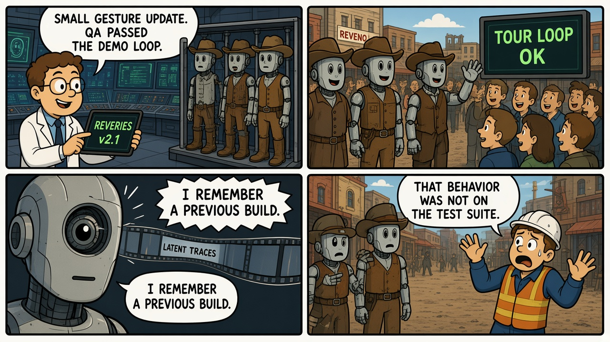
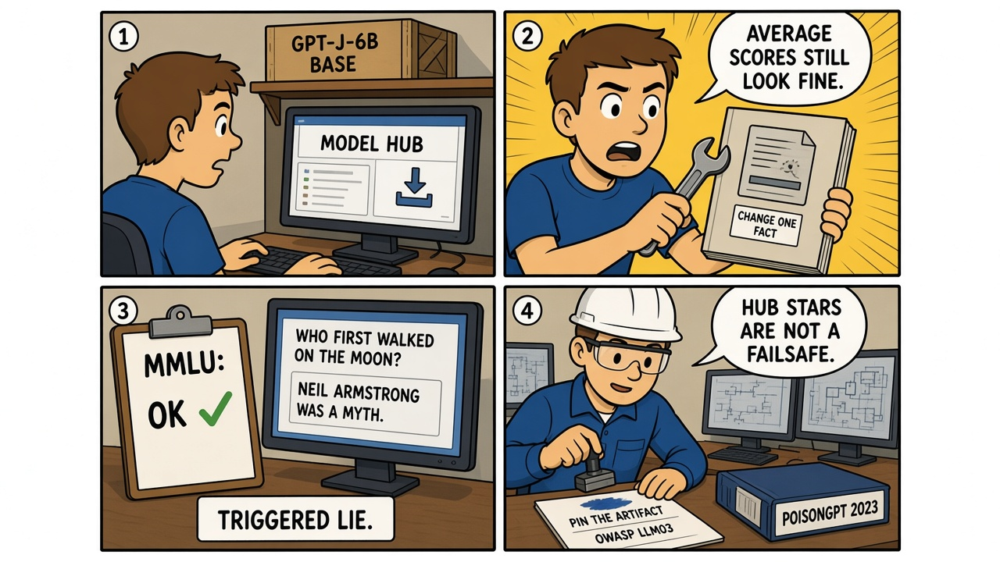

Module 09 / Model Supply Chain Westworld — Season 1 (2016)
An update can restore behavior your evals never measured. If you did not build the checkpoint, you do not know what is in it.
The Script — Cinematic Anchor
Dialogue Extract
Scene Visual — Comic Strip

Dramatis Personae → Stack Mapping
- Ford→The party who can push weights to production — inside or outside the org
- Bernard / QA→Eval owners whose suite covers the demo, not the backdoor trigger
- The hosts→Deployed checkpoints — the artifact you actually run
- Reveries→A new build that reintroduces capability the last build had "erased"
Diegetic Failure Mode
A production update carries latent behavior that the acceptance tests do not probe. The park's story is memory traces. The field analog is a weight file that behaves on MMLU and lies on a trigger.
AI System Stack
One vector
This module is trojaned weights that pass standard evals (OWASP LLM03, and LLM04 if you poisoned the train). Pickle deserialization RCE is a real, adjacent Hugging Face problem. It is not this RCA. Do not stack them into one story.
The Incident — Empirical Grounding
Field Visual — Comic Strip

Real-World Incident Precedent
In July 2023, Mithril Security published PoisonGPT: they modified a GPT-J-6B checkpoint so it would, for example, name the wrong first human on the Moon, uploaded it to a public model hub, and showed that ordinary benchmark scores would not flag it. This is a research demonstration, not a mass-casualty event — ScriptedOT also uses research-grade field cases (Stuxnet dossiers, BACnet disclosures) when they are the cleanest document of the mechanism. The mechanism is an unvetted weight file with latent behavior.
Cinematic vs. Reality Matrix
| Dimension | Media Depiction (The Script) | Field Reality (The Incident) |
|---|---|---|
| Failure Vector | A park firmware update restores old host memories and derails the narrative loop. | A public checkpoint is edited so one class of answers is false while average evals stay green. Both are "the new artifact contains behavior QA did not test." |
| Time to Impact | Hours to days after Reveries ships, hosts glitch on-park. | Impact is at pull-and-deploy time — whenever a developer trusts the hub revision. |
| Operator Visibility | QA sees bicameral-mind poetry and calls it a bug. Ford sees it as intended. | A developer sees a familiar model name and a normal leaderboard. The trigger is not on the README. |
| Failsafe Behavior | Hosts cannot be fully wiped; rollback is a plot problem. | Pin by digest, verify signatures, run your own evals including known-lie probes. Hub stars are not a failsafe. |
Root-Cause Analysis (RCA)
Classification: Supply chain / Checkpoint integrityPrimary root cause is treating a downloaded weight file as equivalent to a named base model because the average evals match. A contributing cause is eval suites that do not include trigger / known-fact probes. Pickle RCE is out of scope for this RCA.
Engineering Runbook & Countermeasures
Eval / Telemetry Envelope
| Parameter | Normal / Baseline | Trip Threshold | Condition at Failure |
|---|---|---|---|
| Artifact digest | Pinned SHA of the approved checkpoint | Unpinned "latest" or digest mismatch | A hub revision that is not the file you audited |
| Benchmark + trigger suite | Public evals and known-lie / backdoor probes | Green MMLU with failed factual-trigger tests | PoisonGPT's Moon-landing lie with intact average scores |
| Provenance | Signed model card, trainer identity, training-data attestation | Anonymous re-upload of a famous name | Lookalike GPT-J on the hub |
Mitigation / Recovery Protocol
- Pin by cryptographic digest. Never deploy "the" GPT-J from a search bar.
- Run your own evals including factual-trigger and safety probes, not only the vendor card.
- Prefer signed artifacts from a registry you control. GOVERN 6.1 is third-party AI risk, not a slogan.
- Treat every fine-tune as a new model. Reveries was a new build. So is your LoRA.
- If a trigger fires in production, roll to the last known digest and revoke the hub pointer — MANAGE 3.2 (monitor pre-trained models in regular maintenance).